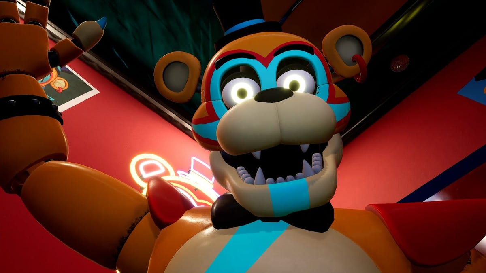
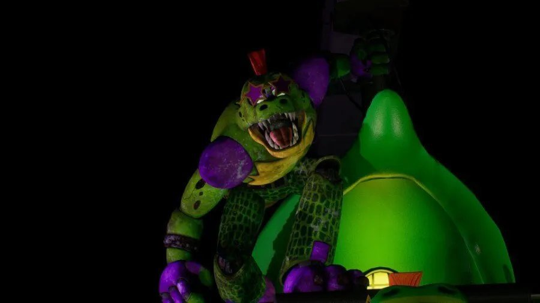
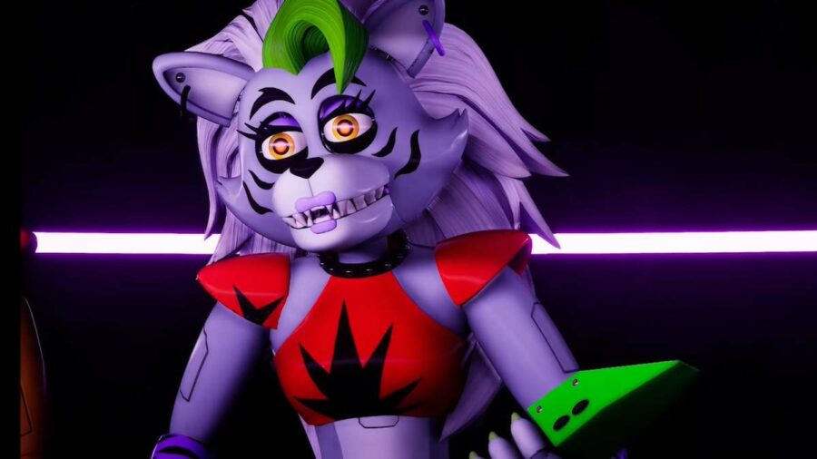

![pic of me [not real]](me.jpg "me ! I made the website :]")
Five Nights At Freddy's Security Breach
Fnaf ? What is Fnaf SB ?
Fnaf SB stands for Five nights at Freddy's Security Break. It is a famous survival-horrorgame
from the horrorgame series Five nights at Freddy's. The first game came out in the year 2014
to be exact on the 8. August 2014. The creator of is Scott Cawthon. There are 6 main Games:
- Five Nights at Freddy's
- Five Nights at Freddy's 2
- Five Nights at Freddy's 3
- Five Nights at Freddy's 4
- Five Nights at Freddy's: Sister Location
- Five Nights at Freddy's VR: Help Wanted
- Five Nights at Freddy's: Security Breach
Fnaf SB alone stands for 'Security Breach' as you cann see in the list above. The Game has 6 different endings. two good one, the goodbye ending, the princess quest ending, the superstar Ending and the Worst ending. You play as Gregory, a child who hid in Freddy until the Pizzaplex almost closed. Why he did that is unknown. Freddy finds him and tries to help him get to the entry before 12am, which you will just barely miss. After that Freddy tell you you´ll have to survive until 6 am where it opens again. You will need to keep on moving and go through different Locations like the Daycare and getting the pass upgrades to get to the next one. In every place is a main animatronic that will try to get you (In daycare for example is it Sundrop aka Moondrop). After it becomes 6 am, you will already have beating atleast Chica. When you get to the entry, which is finally open, you will have to decide between staying (Freddy refuse to leave), going alone or teh Vanny option. It completly depends on which exit you use and or which quest you completed.
Character
There are 7 main Character through the whole game. Gregory, Freddy, Chica, Roxy, Monty and Vanessa, Sundrop/Moondrop. The 4 (not Sun/Moon) animatronic are called Glamrock Animatronics. in the whole Game are 2 humans and one questioning human...William should be dead since a few games now, after burning and getting crushed by the exoskeleton. After the 7 main chara there are other character like the map bot, who gives you the maps and jumpscares you while doing it.
Gregory/ Player
As the player you play the character 'Gregory' who is a little child that hid in Freddy (...) and tries to hide from Vanessa the Security Guard. There isn't much known about hi sbackstory,
but he is most likely homeless, which means he is a orphan or ran away. as far as the Community knows, he isn't part of the Afton Family, so no child or nephe of the pruple guy.
He gives of annoyed or mad comments when he, for example, gets a crappy item. Gregory is quit violent, I mean he killed 3 Animatronics and takes parts of them
to upgrade Freddy. Because of his height he can hide at different places, which is the best way to get away from the animatronics ( I mean you can run-in
but if you will survive that) or get in Freddy to control him.
Through the whole game Gregory gets different items like the Faz-Watch at the start, which you can use to communcate with Freddy. You can also find upgrades
that for example increases your stamina or makes your flashlight hold longer.
Vannesa the Security Guard
Vanessa is the Security Guard and also the only other human you will see (when you take the somehow still living William out of it). She will return a few times through the whole game. Freddy even recommend you to get to her for help before the Pizzaplex completly closes. At one point she will catch you and locks you in a room and talks to you through the monitors. If she is in the ending scene depends on which ending you get. At one point in the game she gets replaced with Vanny ( locked in the room scenario) and ask you if you have fun yet, but who Vanny excatly is is still unknow. Some say she is a second bad personality of her (like DID) other say they are not the same even tho the Names are almost the same (vanny=Vanessa+Bunny). One of the only things know about Vanny is that she is most likely a follower of the digital virus Glitchtrap ( a version of Springtrap from Five Nights at Freddy's: Help Wanted.) In one ending you can see Vannys face, where you see she looks just like Vanessa.
Freddy Fazbear
Freddy Fazbear is like the main animatronic out of all four. He is in Fnaf SB a orangen bear with red and blue paint on him like a thunder on the body in blue. Freddy is the only animatronic who is not out to kill you, instead he tries to help you. You can use his body to walk around without the others finding you, but only as long as he has battery, If he rans out of it, you will automatic die.. He will help you through the whole game and give you hints. You can upgrade him with stuff upgrades that you find in the Pizzaplex or parts of the other animatronics you destroy through the game. Freddy can get the 3 main upgrades, which are the vocal box of chica, claws from Monty and the eyes from Roxy, you can also get upgrade
Chica
Chica is, as you can see in the picture, a chicken. In the game she loves to eat trash for some reasion....
That`s also the way how you defeat her. She is the first animatronic (who tries to get you) who you will meet who can attack you.
You can get her voice box and use it to upgrade Freddy to distracted other animatronic with a sound. She is the only animatronic that you don't fight in her
own themed location instead you destroy her in the kitchen with the trash compactor after you put the Monty Mix in there.

Monty
Monty is a replacement for the bunny animatronic. He is aggresiv and doesn`t show up as often as chica or Roxy. His part in the game is 'Montys Gator Golf'. When you have the gun or the camera you still can't stopp him for a short time, because of his sunglasses. When you defeated him you get his claws which you can use to upgrade Freddy.

Roxy
Roxy aka Roxanne is besides Chica the most aggresive one and is also, like Chica, almost everywhere. Roxy will insult you the whole time while crying the whole time over her look after getting destroyed. She loves her self and in the first meeting of her youcan hear her telling herself how awesome she is...Her Game is 'Roxy's Raceway' where you defeat her and get her eyes. With them Freddy can see present that can have upgrades in it. You can't hide from her because of her sniffing

Sundrop/Moondrop
Sun and Moon are basically the same person. Both are the Daycare Attendant and usually look after the children there. Sundrop has a sun as a head and is more clownish, while Moondrop has a moon as a head and more aggressive. At the first encounter it is Sundrop and the lights are on. Because he is the Daycare Attendan he trys to keep the children safe and will surround the player so he won't be able to get to the office space and turn of the power. Because of the keeping children safe mission of him the player can distracted him with kicking over toys that Sun and Moon will directly go and clean up so teh player can run. When the lights turn off, Sun will dramaticly shout to turn the lights on and will fall backwards from the counter. Moon will crawl back on the counter and tell the player 'it's past their bedtime' where the player now has to turn on the generator. Moon can fly and will but he isn't fast. His eyes are red glowing and his clothes are dark blue with yellow stars and red yellow ornamentation, while Sun's clothes are yellow with red strips downwards. Teh face of both are to the half it a moon but the surface color under it changes. As Sun it is yellow and as Moon is is dark purple blue. When the player has turned all generator on Sun will be back and bann them out while shouting 'Security alert'. After this Moon can still find you and kill you. He will even once get Freddy and drag him away.
Locations themed after the Glamrock Animatronics
+ Sun and Moon
The Pizzaplex is awfully big so there must be different locations with different stuff to do and see. While there are areas like the Atrium where the rooms are from Freddy, Chica, Roxy and Monty or the Basemant there are Areas that are Attractions themed after the Glamrock Animatronics and Sundrop/Moondrop.
Fazer Blast
The Fazer Blast is themed afetr Freddy and is a huge Laser Tag arena in neon colors and neon lights. There is a also a raised walkway leading to rooms. The neon lights are different in each area and sometimes start to flash. On the wall are glowings designs. As decoartions is there one giants rockets in the middle, two plantes-like sphere with glowing rings on the side. The player can play Lazer Tag where they have to capture the three flags. The player has to protect it from the bots that are now trying to get to it for a specific time. The player has also to be careful to not get catched by Chica. After winning it the player get the Fazer Plaster which they can use to flash and stop bots and animatronic for a short time. The player also get the chance to go trough a two vents and find Vennys room which you need for one of the endings. After this the player will be able to get out fo the Fazer Blast again.
Mazercise
Mazercise is themed after Chica. It is a fitness area and has the tagline " Chica`s delicious path to fitness!" and has a extremly annoying puzzle maze in there, which every Player had struggle even understanding which button does what. Unless in themed Location, you don`t have a 'boss fight' 'cuz you already have destroyed chica and took her voice box. She will still be there. After solving the puzzle the player can get to the vent which leads to Monty's Gator Golf.
Monty's Gator Golf
As you can already see in the name, this one is themed after Monty, is about Golf. The whole location is themed after Monty and is full of crocodile animatronic. Beacuse of the theme the whole golf playce is dark, green and jungle like. To fight Monty you get on a platform with different ways and shooting machine. While Monty's chasing you you have to shoot balls in a big bucket. Monty will destroy those shooting machine and each one has only around 10 balls. After getting the bucket full you have to go to it and press a button. The bucket will fall forward and on Monty who will try to keep standing and pushing up but will fall with it at the end. Through this he will lay on the ground, missing his bottom haf and you get the claws and get out.
Roxy Raceway
Roxy Raceway is a Raceway themed after Roxy. To get to it you have to go through a kind of construction site. The main room is giant and has on the right side a few rows of seats that are sepereated by a silver Roxy statue with a flag in the hand. At the far end of the room is Roxanne with a mordified black and red outfit, shades and two checkered flags in her hand.On the left side, Several pit stops are visible, although appearing to be more for concession stands. A garage door is between two of them, partially open. Further back, a few trees can be seen, alongside a giant pedestal. Although it barely peeks in, what appears to be a rainbow cup similar to that of a McDonalds McFlurry is seen, raised off of the ground by a rainbow pole. In the middle of the area is a giant track. The whole Location is red purple with a few green and purple neon lights.
Superstar Daycare
The superstar Daycare, usually called only Daycare, is the first location which is themed after only one Animatronic, in the Daycare it is Sundrop aka Moondrop. Your Mission is like in every other Location of these is to get the Security Badges where he also gets the flashlight. The player only goes there `cuz you can`t go anywhere else after getting the Daycare pass because of a machine error. Sun/Moons room is far up in the playground and usually is not visited. On the top is a platform where Sun jumps in the cutscene down and in a all pit. The main time the player will be on the playground full of toys and desk and two big play structures where the generators are. Around the big ball pit is a castle where the player can also go in but won`t be able to find something uselfull. After the Generators are all turned on the Gregory (Player) got kicked out you will be in the area where the parents would be but the Animatronics will be there and chasing you. After getting out you will still be able to go there and maybe even has to when you chose to stay.
Bonnie Bowl
Bonnie Bowl is a Bowling alley that is getting rethemed. It is the only Locations without the animatronic waling around or even being active. Bonnie got decomimissiong. Why? We don't know. When it gets entered with Freddy he will tell the player how he doesn`t often comes up here after Bonnies decommissions. At the start of it are lockers, trophies, bowling balls, couches and also Fizzy Faz machines. There are two shuttler bringing you to the arcade area and one to the main bowling area. In the Bowling area are twenty-two bowling alleys with six ball holding. There is also an ice cream parlor where the bot is designed after Circus Baby. In the Area is also a stages that belonged to Bonnie and many tables. Teh whole Location is purple pink and the most lights are neon lights in different form, one of them is a big star in the middle on the roof.